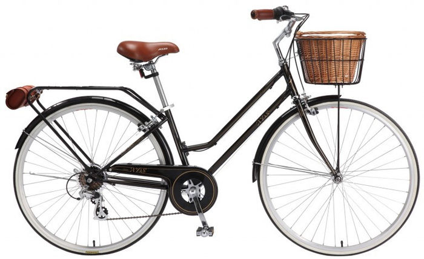

Gazelle Primeur
Gazelle Primeur - Izturīgs tērauda M izmēra rāmis, R28 rati, Sturmey Archer 3 ātrumi rumbā, trumuļbremzes, dubļusargi, ķēdessargs, bagāžnieks, priekšējais grozs, atbalsta kājiņa, rata saslēgs.Veikta pilna apkope - ir garantija
Cena: 119€